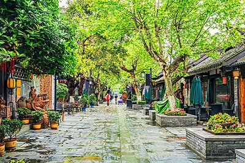
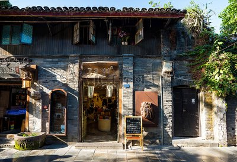
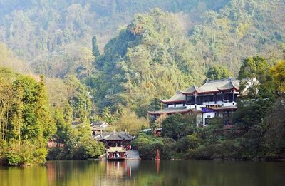
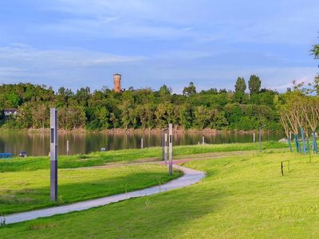
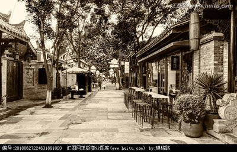
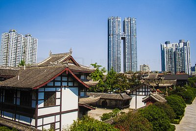

NATURE · 自然
大熊猫繁育研究基地
近距离看国宝熊猫，感受萌趣与自然生机。


慢下来，才是成都
About Chengdu
天府之国，烟火成都。赏国宝熊猫，逛古巷老街，品地道川味，感受蓉城慢生活。
2300+
年建城历史
悠闲
蓉城生活态度
巴适
成都独特体验
Places to go
在自然与人文之间，遇见成都的不同模样。
NATURE · 自然
近距离看国宝熊猫，感受萌趣与自然生机。

CULTURE · 人文
穿行青砖灰瓦间，读懂老成都的闲适日常。

OLD TOWN · 古韵
红灯映古街，边逛边尝地道小吃与市井风情。
LANDMARK · 名胜
探访千年水利工程，领略古人治水智慧。
Taste of Chengdu
麻辣鲜香之外，还有让人惦念的地道小吃。来成都，把每一餐都过成好滋味。
红油翻滚，热辣过瘾

麻辣鲜香，面香筋道
甜辣回香，经典川味
签签串起，热闹巴适
STAY IN CHENGDU
从热闹商圈到安静街巷，挑一处合心意的落脚点，让旅程自在舒适。
Travel journal

路线推荐 · 轻松一日
从早茶到夜游，串起老街、熊猫与城市烟火。
美食地图 · 川味寻踪
火锅、面食与小吃，一份不踩雷的味觉清单。
城市漫步 · 慢生活
放慢脚步，在一盏茶、一片绿意里感受蓉城。